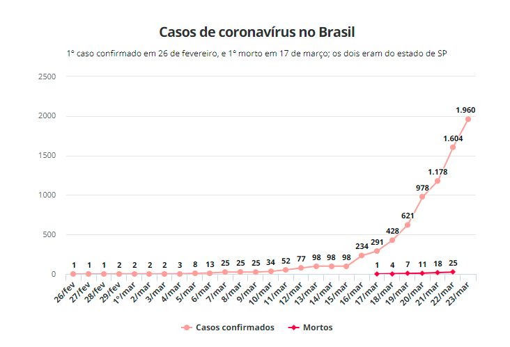

Após isso os niveis de contaminados foram aumentando, a partir do dia 17 de Março de 2020 começou a ser confimardo as mortes pelo COVID-14.
As secretarias estaduais de Saúde divulgaram, até 21h00 desta segunda-feira (23), 1.960 casos confirmados de novo coronavírus no Brasil em 26 estados e no Distrito Federal. Os números são os mesmos apresentados pelo Ministério da Saúde.
O Ministério da Saúde atualizou seus números na tarde desta segunda-feira, informando que o Brasil registra 1.891 casos confirmados do novo coronavírus e que já foram registradas 34 mortes, 30 no estado de São Paulo e quatro no Rio de Janeiro.
Nesta segunda, o Pará notificou mais um caso, o Rio Grande do Norte chegou a 13 confirmados, e a Paraíba registrou o segundo caso. O Amazonas registrou mais seis casos confirmados, totalizando 32 infectados no estado. No fim da noite de domingo (22), o Rio Grande do Sul alcançou 85 casos, e o Distrito Federal contabilizou 134 pessoas com coronavírus até o momento. Já o número de casos no Paraná chegou a 60. Em Minas Gerais, agora são 128 casos da doença confirmados e o Rio de Janeiro alcançou 233 casos. O Acre teve um aumento de casos, de 11 para 17. O Rio Grande do Sul registra 90 casos da doença.